| |
|
DEMİRYOLU MAKASLARI
|
GENEL BİLGİLER 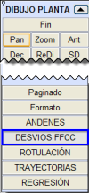Bir projedeki makasın daha sonra doğru bir şekilde montajına olanak tanıyan tanımı için, bazı ön hesaplamalar zorunludur. Istram'ın aşağıda göreceğimiz bir dizi parametreden yola çıkarak otomatikleştirmeye çalışacağı hesaplamalar bunlardır. Bu menüye erişmek için Plan > Plan Çizimi > Demiryolu Makasları menüsünde olmamız gerekir. Her makasta ayırt edeceğimiz üç bölge bulunur:
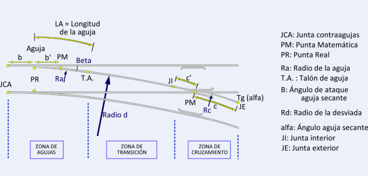
Üç sekmeyi ayırt edebileceğiz: DOSYALAR, VERİLER ve SONUÇLAR. DOSYALAR 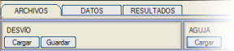DOSYALAR sekmesinde, tanımladığımız Makasın tüm yapılandırmasını .dvf uzantılı bir dosya aracılığıyla yükleyebilir veya kaydedebiliriz. Öte yandan, bir tip makas dilinin önceden belirlenmiş parametrelerini yükleyebiliriz. Bu parametreleri VERİLER sekmesinde göreceğiz:
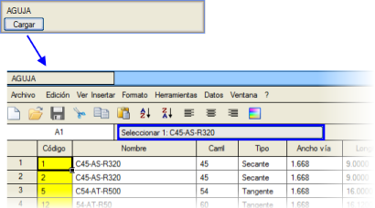
Aynı şekilde, program gelecekteki makasımızın tanımı için en uygun olanı seçerek farklı göbek verilerini yüklememize olanak tanır: Bu tabloda seçmek ve işaretli Göbeği veya Makas Dilini yüklemek için, [Seç: xxxxx] düğmesine basmak gerekir. 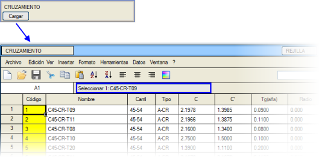
VERİLER VERİLER sekmesinde, MAKAS'ın genel tasarımı için üç bölümü ayırt edebileceğiz: 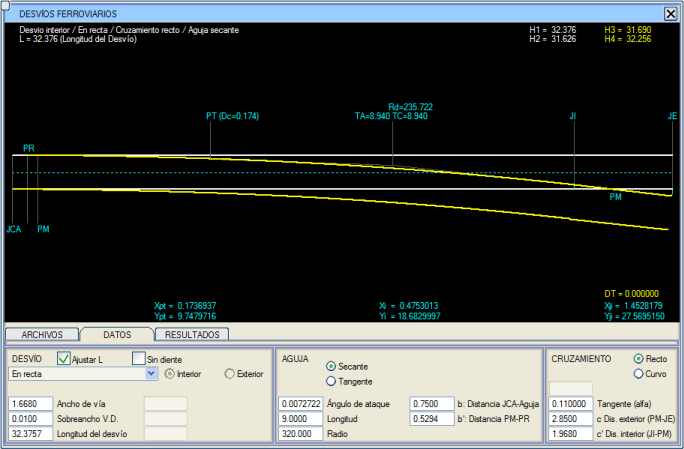
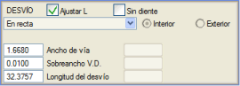Aşağıdaki durumları ayırt edeceğiz: Doğruda aşağıdaki parametreleri tanımlayabileceğiz: Hat Genişliği: Hattın genişlik değeri.
Sapma Hattı Ek Gen. : Sapma hattının ek genişliği (bazen sıfırdır). Makas Uzunluğu : Makasın uzunluğu (Kontray birleşim derzinden (JCA) doğru hattın dış birleşimine (JE) kadar). Dairesel kurpta, yukarıdaki parametrelere ek olarak şunları da bilmek gerekir: Kurp Yarıçapı: Eğrilik yarıçapı, genellikle dış rayın yarıçapı.
Geçiş eğrisinde, önceki modlarda belirtilen parametreleri değiştirebiliriz ve ayrıca şunlar da gerekecektir: 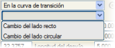Makas Yönü: Değişikliğin düzlük tarafında mı yoksa kurp tarafında mı olduğu.
Klotoid Uzunluğu: Klotoidin uzunluğu. J.C.A. KM'si: Kontray birleşim derzinin (JCA) kilometre değeri. Bir eksen üzerinde, makasın oluşturulacağı eksenin numarasını belirterek. Bu durumda makas sağa veya sola tasarlanabilir. 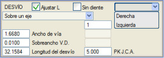
Makas Bir eksen üzerinde tanımlı olarak hesaplandığında, Sonuçlar sekmesinde makası eksenin gerçek koordinatlarında çizmeye izin verilir. Program, verilen bir uzunluk için makası dişli veya dişsiz olarak hesaplar ya da makasın ideal uzunluğunu hesaplar. Sonucu grafiksel olarak ve daha sonra göreceğimiz bir rapor aracılığıyla oluşturur. 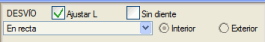L'yi Ayarla kutucuğu aracılığıyla program, makasın geometrisini yeniden yapar ve herhangi bir parametreyi her değiştirdiğimizde makasın dört rayının uzunluklarını hesaplar. Dişsiz kutucuğundan başlayarak, aşağıdaki şekillerde gördüğümüz gibi TA ve TC teğetlerinin uzunluklarını eşitleriz: 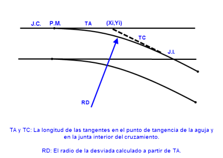
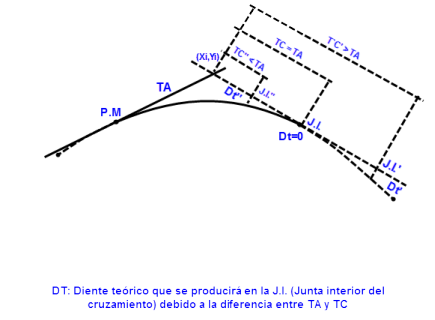
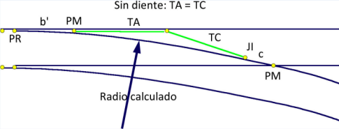
Program, kurp yarıçapına (pozitif veya negatif) bağlı olarak makasın İç mi yoksa Dış mı olduğunu otomatik olarak algılar. 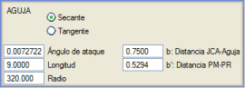Makas dilleri sekant veya tanjant olabilir. Tanımlanacak parametreler şunlardır:
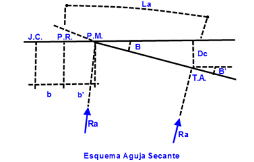
Not: Dc, T.A.'dan kontray üzerindeki dik izdüşüm noktasına olan mesafedir.
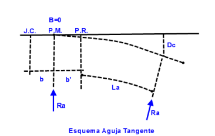
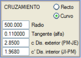İki tür göbek, düz veya kavisli:
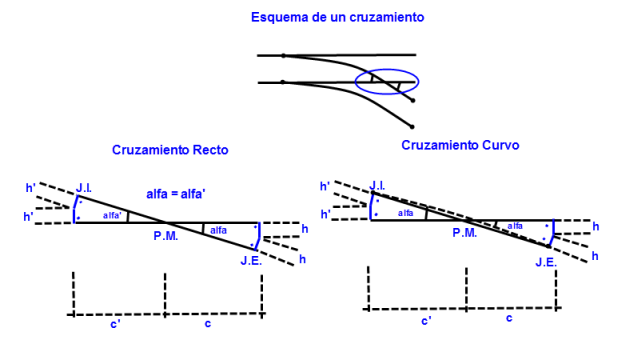
Not: h, göbeğin dış ucunun karakteristik uzunluğu ve h' ise göbeğin iç ucunun karakteristik uzunluğudur.Göbekte aşağıdaki noktaları ayırt edeceğiz:
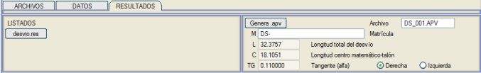
Eğer Veriler sekmesinde bir eksen üzerinde bir makas tanımladıysak, makası planda çizebiliriz. 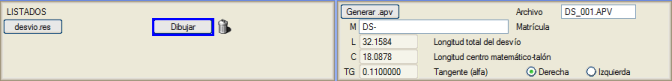
desvio.res kutucuğu aracılığıyla bir sonuç raporu elde ederiz. Bir yandan makas yapılandırmasında girilen verileri, diğer yandan da aşağıda gördüğümüz gibi bazı sonuçları verir:
|